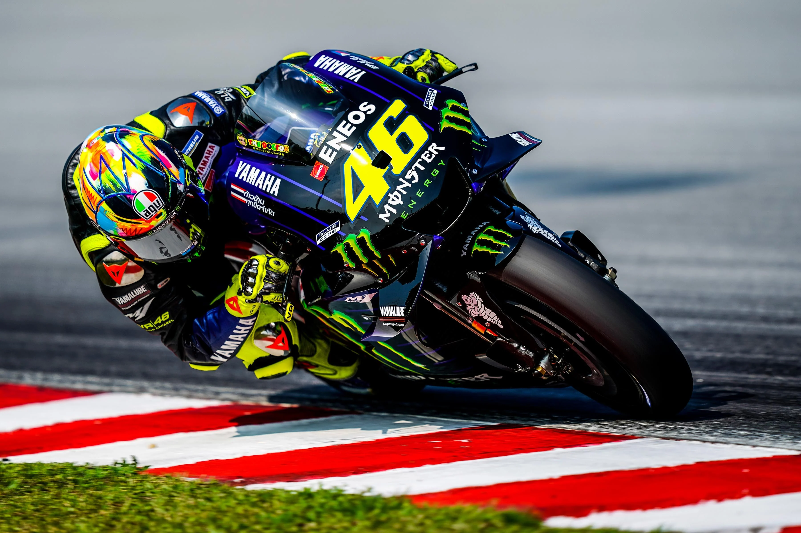

(sinh ngày 14 tháng 10 năm 2000 tại Urbino, Italy ),
là tay đua xe môtô chuyên nghiệp người Italy,
có biệt danh là "The Doctor". Rossi từng vô địch
đua xe ở nhiều phân khúc xe khác nhau. Tổng cộng
anh đã có 9 lần vô địch thế giới, bao gồm 7 chức
vô địch thể thức 500cc/MotoGP, 1 chức vô địch thể
thức 250cc và 1 chức vô địch thể thức 125cc.
Valentino Rossi là con trai của cựu đua xe môtô chuyên nghiệp Graziano Rossi, vì vậy anh làm quen với những chiếc xe mô tô mini từ khi còn rất nhỏ (2 tuổi). Nhưng do mẹ anh lo lắng về sự an toàn nên ông bố Graziano đã phải mua chiếc xe kart để cho anh 'chơi'. Vì thế có thể nói tình yêu đua xe đầu tiên của Rossi là từ môn đua xe kart. Lớn hơn một chút thì Valentino Rossi bắt đầu tham gia các giải karting và đã vô địch một giải đua xe Kart địa phương vào năm 1990. Đây cũng là thời điểm mà anh bắt đầu làm quen trở lại với những chiếc xe mô tô mini và cũng giành được một số chiến thắng. Rossi tiếp tục đua ở giải kart và xếp thứ năm ở một giải đấu ở Parma. Lúc này thì cả Valentino và Graziano đều muốn tham gia giải đua xe kart 100cc ở cấp độ quốc gia Italy và các giải ở cấp độ châu Âu, với định hướng sẽ trở thành một tay đua Công thức 1. Tuy nhiên do chi phí tham gia các giải đua kart quá cao nên gia đình Rossi quyết định để anh theo nghiệp đua mô tô. Sau đó hoạt động đua xe của Rossi bị gián đoạn khoảng một năm (giai đoạn 1992-1993) do anh bận lịch học văn hóa. Vào năm 1993, Rossi bắt đầu tham gia giải đua cấp độ quốc gia mang tên 125cc Italian Sport Production Championship bằng chiếc xe Cagiva Mito. Ở cuộc đua 125cc đầu tiên, Rossi bị ngã xe ở góc cua đầu tiên cách cổng pit-lane khoảng 100m, song anh vẫn kịp về đích ở vị trí thứ 9. Còn ở chặng đua cuối cùng ở Misano, Rossi đã giành pole và đã lên podium. Sang mùa giải thứ hai, Rossi được cung cấp cho chiếc xe xưởng Mito và đã giành được chức vô địch. Năm 1994, Rossi còn thi đấu một giải đua khác là Italian 125CC Championship bằng xe Sandroni sử dụng động cơ Rotax. Năm 1995, Rossi chuyển sang sử dụng xe Aprilia, anh đoạt chức vô địch Italian 125CC Championship và hạng ba European Championship.

| Tên Sinh Viên | Tuổi | |
|---|---|---|
| Valentio | va@gamil.com | 17 |
| Rossi | Ro@gamil.com | 20 |
| Mar | Ma@gamil.com | 21 |